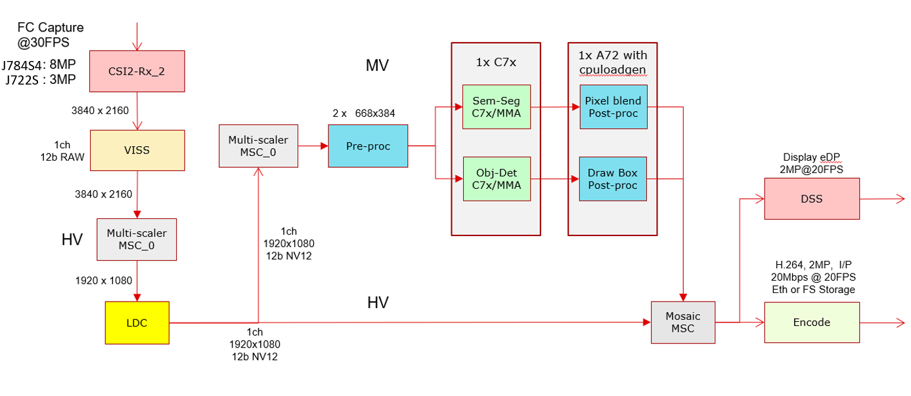
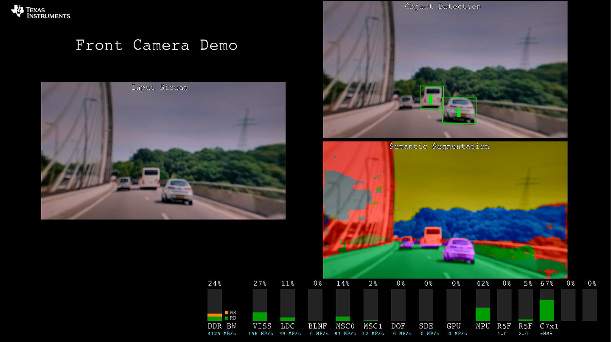

|
Vision Apps User Guide
|


|
|
Vision Apps User Guide
|
|
This example demonstrates how to build a vision application that integrates the IMX728 8MP front camera pipeline with TIDL-based Object Detection and Semantic Segmentation models. The demo is validated using TIDL-compatible networks such as SSD for object detection and DeepLab for segmentation. Raw sensor data is captured via CSI2Rx and processed through the VISS (Video Input Subsystem) for image enhancement. The processed image is converted to NV12 format and optionally rectified using LDC for lens correction. The image is then scaled to the required DL resolution (e.g., 416x416 and 512x512) using MSC. Pre-processing, including color space conversion and padding, is performed on the A72/A53 cores. The prepared input is sent to the C7x DSP, where TIDL runs inference for both object detection and segmentation. Post-processing on the A72/A53 cores decodes the model outputs, overlays bounding boxes and segmentation masks, and blends system statistics before displaying the final annotated output on a 1920x1080 screen.
| Platform | Linux x86_64 | Linux+RTOS mode | QNX+RTOS mode | SoC – |
|---|---|---|---|---|
| Support | NO | YES | YES | J722S / J784s4 |

"/opt/vision_apps/" on the rootfs partition.This application cannot be run on PC
Shown below is a example for running front camera object detection and semantic segmentation on IMX728 8MP camera.

Check the following pages for more details on how to build and run the front camera demo with ECU build and measure power consumption.
 1.8.14
1.8.14